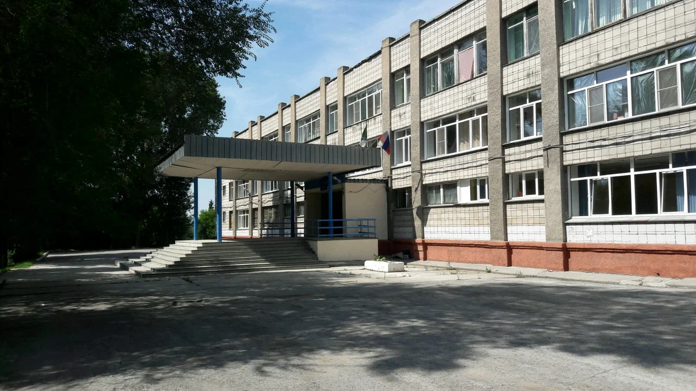
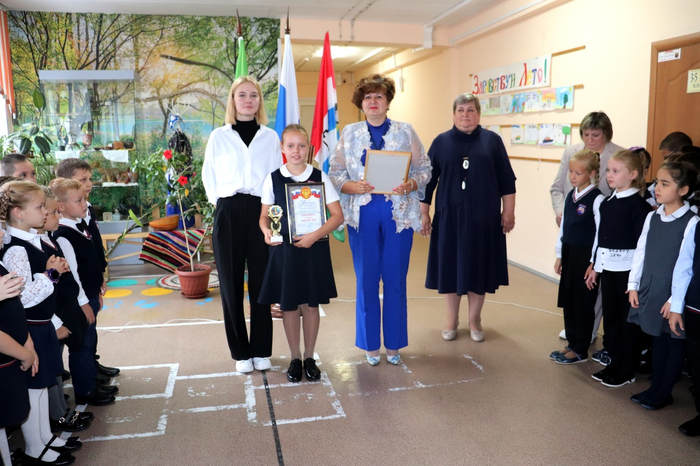

Мы рады приветствовать вас на неофициальном сайте нашего учебного заведения. Сайт адресован всем, кому интересно знать, чем живет наша образовательная организация. Он создается для Вас, уважаемые Родители, любимые Учащиеся и Преподаватели, а также просто Гости сайта. ㅤ ㅤ ㅤ ㅤ ㅤ ㅤ
Данная школа была основана в 1930 году и продолжает работать. Средне общеобразовательная школа в которой обучается более 600 учеников и более 20 высококлассных преподователей. Некоторые ученики даже окончили эту школу и сами стали преподователями в ней. В нашей школе достаточно много мероприятий и кружков, которые сделают обучение в школе многообразным. Также наша превосходная директор Аникина Лариса Александровна закончила магистратуру и ведёт уроки алгебры и геометрии. При её руководстве в школе был сделан полный ремонт. А также повысился некоторый балл от ОГЭ и ЕГЭ.